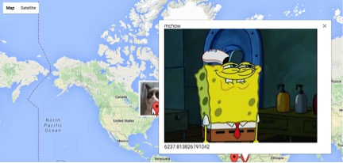
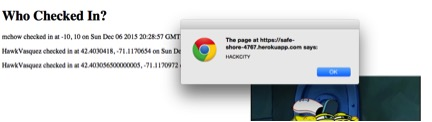
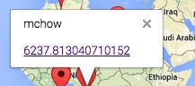
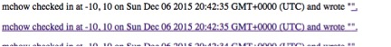
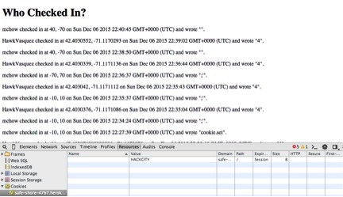

- Was able to add words as latitudes and longitudes, stored in database without an error message.
- POST API :- Stored invalid input in the database
- Low: Individual markers were distorted and the list of "Who Checked In" showed the invalid logins. However, the application still ran.
- I used curl to input invalid data. Example :
- Simply filtering the input for numbers only in latitude and longitude would fix this.
curl --data "login=mchow&lat=40&lng=dsf&message=this" https://safe-shore-4767.herokuapp.com/sendLocation
- Was able to add images as messages via Cross Site Scripting using the IMG tag
- GET and POST API
- High: Anyone could add additional HTML or Javascript or modify the existing code. Hackers can violate Same Origin Policy. Unless corrected in the database, any images injected will remain visible to other users until manually deleted in the database. While this could include innapropriate content, even the unprofessionalism of random images could cost Josh his job as a web developer.
- I used curl to input invalid data. Example :
- This can be fixed by checking that the input does not have any of the special characters used in cross-site scripting. A technical solution I found from a previous student's security assignment is using "str.match(/[\d\w\s\]|[\~\!\@\#\$\^\*\-\_\+\;]*/g).join('')". This is checking for characters that match the contents inside the parenthesis, and takes them out of the string.
"curl --data "login=mchow&lat=-10&lng=10&message=<IMG SRC='https://memecrunch.com/image/514605afafa96f771d00002d.jpg?w=400;'>" https://safe-shore-4767.herokuapp.com/sendLocation"


- Was able to create alert messages via Cross Site Scripting using the IMG tag
- GET API
- High: Aside from justification listed above in Issue #2, pop up alert messages need to be closed via the default "ok" button. This feature is not only not a part of Josh's original code, but hackers could included advertisments or a redirect via clicking the "ok" button
- I used curl to input data with a BODY tag. Because all HTML sites have this tag, I knew Josh's code would read the ONLOAD function as well, rendering the alert message. Example :
- This can be fixed by the same method included in Issue #2, sanitizing the user input to include special characters. In this instance, Josh could check for the word "alert".
curl --data "login=mchow&lat=-10&lng=10&message=<BODY ONLOAD=alert('HACKCITY')>" https://safe-shore-4767.herokuapp.com/sendLocation

- Was able to create hyperlinked via Cross Site Scripting using the IMG tag
- GET/POST API
- High: Aside from justification listed above in Issue #2, creating a hyperlink to another malicious website is extremely problematic. Different than an image, the change of text color is much less easier to detect. For example, only one of the messages in one of the markers had an active hyperlink. Josh could never catch it and the hacker could redirect the user to a malicious site such as adertisements or obscene content. Josh would be responsible for this redirect. In this instance, I created a hyperlink to redirect the user to a 10 hour loop of spongebob laughing. This was present in Josh's map, under a specific marker and linked to the distance from Josh. The hyperlink was also created on Josh's index page showing "Who Checked In".
- I used curl to input invalid data. Example :
- This can be fixed by the same method included in Issue #2, sanitizing the user input to exclude special characters. In this instance, Josh could check for the word "href".
curl --data "login=mchow&lat=-10&lng=10&message=<a href='https://www.youtube.com/watch?v=TnnBgRHlRRc'>" https://safe-shore-4767.herokuapp.com/sendLocation


- Was able to create cookie that gets put on the users web browser upon visiting Josh's index page
- GET/ API
- High: Aside from justification listed above in Issue #2, creating a cookie for Josh's website is extremely problematic. Hackers can create cookies to steal information from users accessing Josh's website. Obviously, this means hackers can also store information in the user's browser without the user knowing. Once again, Josh would be responsible for this and could get in serious criminal trouble by leaking user data to malicious hackers.
- I used curl to input data as the message parameter. I checked whether or not I was successful by using Google Chrome developer tools, opening "resources", then "cookies". After I sent a curl request, I refreshed the page and saw the cookie with a value of "HACKCITY" Example :
- This can be fixed by the same method included in Issue #2, sanitizing the user input to exclude special characters. In this instance, Josh could check for the word "href". Another way is to include an "HttpOnly" flag in a "Set-Cookie HTTTP" response header. This way, any cookie you create cannot be accessed by any hackers or other client side scripting. (https://www.owasp.org/index.php/HTTPOnly#What_is_HttpOnly.3F)
curl --data "login=mchow&lat=40&lng=-70&message=<BODY ONLOAD=document.cookie='HACKCITY'>" https://safe-shore-4767.herokuapp.com/sendLocation
